소음진동기사(구) (2006-03-05 기출문제)
1과목: 소음진동개론
1. 진동의 등감각곡선에 대한 설명으로 알맞지 않은 것은?
- 수직진동은 4~8Hz 범위에서, 수평진동은 1~2Hz 범위에서 가장 민감하다.
- 등감각곡선에 기초하여 정해진 보정회로를 통한 레벨을 진동레벨이라 한다.
- 인체의 진동에 대한 감각은 진동수에 따라 다르다.
- 일반적으로 수직 및 수평 보정된 레벨을 많이 사용하여 dB(V)단위로 표기한다.
(정답률: 알수없음)

2. D특성 청감보정회로에 대한 기술로 옳지 않은 것은?
- A특성 청감보정회로처럼 저주파 에너지를 많이 소거시키지 않는다.
- 15000Hz이상의 고주파 음에너지를 보충시킨 것이다.
- A특성 청감보정곡선으로 측정한 레벨보다 항상 크다.
- 항공기 소음에 대하여 주로 적용하는 청감응답이다.
(정답률: 알수없음)
3. 옥타브밴드 중심주파수 500Hz, 1000Hz, 2000Hz의 청력손실이 각각 10dB, 20dB, 30dB이라 할 때 평균청력손실은?
- 15dB
- 20dB
- 25dB
- 30dB
(정답률: 알수없음)
4. 소음을 600~1200Hz, 1200~2400Hz, 2400~4800Hz의 3개의 밴드로 분석한 음압레벨을 산술평균한 값은?
- PNC
- NC
- NRN
- SIL
(정답률: 알수없음)
5. 500Hz의 음이 수직 입사할 때 투과손실이 40dB인 단일 벽체의 면밀도는 몇 kg/m2인가?
- 28.3
- 30.4
- 32.3
- 64.2
(정답률: 알수없음)
6. 음의 용어 및 성질에 관한 설명으로 알맞지 않은 것은?
- 정재파(standing wave):둘 또는 그 이상의 음파의 구조적 간섭에 의해 시간적으로 일정하게 음압의 최고와 최저가 반복되는 파이다.
- 진행파(prigressive wave):음파의 진행방향으로 에너지를 전송하는 파이다.
- 파면(wavefront):파동의 위상이 같은 점들을 연결한 면이다.
- 음선(soundray):음의 진행방향을 나타내는 선으로 파면에 수평한다.
(정답률: 알수없음)
7. 다음 설명 중 틀린 것은?
- 0dB은 소음이 없는 상태를 의미한다.
- 인간이 감지할 수 있는 최저가청음압은 약 20uPa이다.
- 인간이 감지할 수 있는 최대가청음압은 약 60Pa이다.
- 1N/m2은 1Pa이다.
(정답률: 알수없음)
8. 다음 중 음압레벨의 대수비와 음의 세기레벨의 대수비와의 관계식으로 맞는 것은?
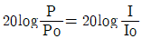
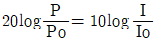
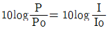
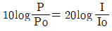
(정답률: 알수없음)
9. 벌판에 세워진 어느 공장으로부터 2m 떨어진 지점에서 소음도는 59dB이었다. 8m 떨어진 지점의 소음도는?
- 67dB
- 75dB
- 57dB
- 47dB
(정답률: 알수없음)
10. 소음에 대한 일반적인 인간의 반응이다. 틀린 것은?
- 40보다 20대가 민감하다.
- 남성보다 여성이 민감하다.
- 건강한 사람이 환자보다 민감하다.
- 개인에 따라 민감도가 틀리다.
(정답률: 알수없음)
11. 다음 중 평면파의 파동방정식으로 맞는 것은? (단, u:매질입자변위, t:시간, x:음파의 진행 좌표계, C:음파의 전파속도)
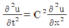
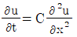
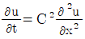
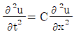
(정답률: 알수없음)
12. 다음 ()에 적합한 것은?
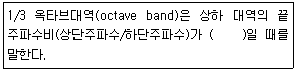
- 약 1.63
- 약 1.45
- 약 1.26
- 약 1.15
(정답률: 알수없음)
13. 다음의 매질 중 소리전파 속도가 가장 느린 것은?
- 공기(20℃)
- 수소
- 헬륨
- 물
(정답률: 알수없음)
14. 마스킹(Masking) 효과에 관한 설명 중 틀린 것은?
- 작업장안에서의 배경음악은 마스킹 효과를 이용한 것이다.
- 두음의 주파수가 거의 같을 때는 맥동이 생겨 마스킹 효과가 감소한다.
- 음파의 반사, 투과, 흡수의 복합적 현상이다.
- 저음이 고음을 잘 마스킹 한다.
(정답률: 알수없음)
15. 음파의 반사에 관한 설명으로 틀린 것은?
- 관내를 음파가 통과할 때 관의 단면적이 급변하면 음파의 반사가 일어난다.
- 2개의 매질이 경계면에서는 음향임피던스가 급변하고 음파의 반사가 일어난다.
- 파장에 비해 작은 요철면에서는 음파는 산란하고 정반사 하지 않는다.
- 파장에 비해 장애물의 크기가 작으면 음파는 방해없이 통과한다.
(정답률: 알수없음)
16. 진동발생원의 진동을 측정한 결과, 진동가속도 진폭이 2×10-2(m/sec2)이었다. 이를 진동가속도레멜(VAL)로 나타내면 얼마인가?
- 57dB
- 60dB
- 63dB
- 67dB
(정답률: 알수없음)
17. 사람의 청각이 손상을 입지 않는 소음의 최대 노출기준은 90dB(A)이며, 이러한 소음에 대한 노출지속시간의 한계는 1일 작업시간이 8시간이다. 여기에서 노출지속시간의 한계를 4시간으로 할 경우 허용소음의 한계는 몇 dB(A)인가?
- 91
- 93
- 98
- 100
(정답률: 알수없음)
18. 귀의 구성기관 중 이관(耳管)의 역할은?
- 음은 증폭한다.
- 내이(內耳)에 공기를 전달한다.
- 고막의 진동을 쉽게 할 수 있도록 중이의 기압을 조정한다.
- 내부에 림프액이 있어 청신경을 자극한다.
(정답률: 알수없음)
19. 공해진동에 관한 설명 중 틀린 것은?
- 주파수는 1~90Hz 범위이다.
- 진동레벨은 60~80dB 범위의 경우가 많다.
- 사람에게 불쾌감을 주는 진동을 말한다.
- 사람이 느끼는 최소진동치는 45±5dB 정도이다.
(정답률: 알수없음)
20. 어떤 점의 음의세기 I(W/m2/s)는 실효음압 P(N/m2)와 고유음향임피던스 ρc(kg/m2/s)에 의해 표시된다. 이들 관계식 중 맞는 것은?
- I=p/ρC
- I2=p/ρC
- I=ρC/P2
- I=P2/ρC
(정답률: 알수없음)
2과목: 소음방지기술
21. 공장내 지면에 소형선풍기가 있다. 여기서 발생하는 소음은 10m 떨어진 곳에서 70dB이었다. 이것을 60dB로 하려면 이 선풍기를 얼마나 이동시켜야 하는가?
- 21.62m
- 31.62m
- 41.62m
- 11.62m
(정답률: 알수없음)
22. 공개홀에서 연설자의 말이 서로 중첩되어 무슨말인지 알아듣기 어려운 위치를 DEAD SPOTS 또는 HOT SPOTS라고 한다. 이 때 직접음과 반사음의 시간차는?
- 5초
- 0.5초
- 0.⑤초
- 0.0⑤초
(정답률: 알수없음)
23. 산업기계에서 발생하는 유체역학적 원인인 기류음의 방지대책과 가장 거리가 먼 것은?
- 분출유속의 저감
- 관의 곡률 완화
- 방사면의 축소
- 밸브의 다단화
(정답률: 알수없음)
24. 확산음장으로 볼 수 있는 공장의 부피가 3000m3, 내부 표면적이 17002, 그 평균 흡음율이 0.3일 때 다음 중 옳지 않은 것은?
- 실내 음선의 평균 자유전파 경로는 약 7.1m이다.
- 실정수는 약 730m2이다.
- Sabine의 잔향시간은 약 3.2초이다.
- 실내에 파워레벨 90dB의 음원을 설치할 때 실내의 평균음압레벨은 약 67dB이다.
(정답률: 알수없음)
25. 콘크리트(면적 30m2, TL=40dB)와 유리창(면적 10m2, TL=15dB)으로 구성된 벽이 있을 때 유리창을 2m2만큼 열었다. 이 때의 총합투과손실은 무엇인가?
- 11.0dB
- 12.5dB
- 14.5dB
- 16.2dB
(정답률: 알수없음)
26. 아래 그림과 같은 방음벽을 설계하였다. S는 음원이고 수음점은 P이다. 수음측 지면이 완전 반사일 경우의 경로차는?
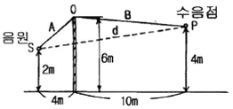
- 5.43m
- 7.87m
- 3.24m
- 4.57m
(정답률: 알수없음)
27. 다음은 다공질 재료의 흡음특성을 나열한 것이다. 틀린 것은?
- 다공질 재료는 산란되기 쉬우므로 표면을 얇은 천 등으로 피복하여서는 안된다.
- 재료의 두께를 증가시키면 넓은 영역에서 흡음율이 증가한다.
- 밀도를 증가시켜도 두께를 증가시키는 것과 같은 흡음효과를 얻을 수 있다.
- 재료의 배후에 공기층을 두면 저주파 영역의 흡음율을 향상시킬 수 있다.
(정답률: 알수없음)
28. 공동공명기형 소음기의 공동내에 흡음제를 충진할 경우에 감음특성으로 가장 적절한 내용은?
- 저주파음 소거의 탁월현상은 완화되지만 고주파까지 거의 평탄한 감음 특성을 보인다.
- 저주파음 소거의 탁월현상이 향상되며 고주파까지 효과적인 감음 특성을 보인다.
- 고주파음 소거의 탁월현상은 완화되지만 저주파에서는 효과적인 감음 특성을 보인다.
- 고주파음 소거의 탁월현상이 향상되며 저주파에서는 일정한 감음 특성을 보인다.
(정답률: 알수없음)
29. 다음 중 잔향실에 관한 설명으로 알맞은 것은?
- 실내 표면의 흡음율을 0에 가깝게 하여 표면에 입사한 음을 완전히 반사시켜 잔향음장이 형성되도록 만든 곳
- 실내 표면의 흡음율을 0에 가깝게 하여 표면에 입사한 음을 완전히 반사시켜 확산음장이 형성되도록 만든 곳
- 실내 표면의 흡음율을 1에 가깝게 하여 표면에 입사한 음을 완전히 반사시켜 잔향음장이 형성되도록 만든 곳
- 실내 표면의 흡음율을 1에 가깝게 하여 표면에 입사한 음을 완전히 반사시켜 확산음장이 형성되도록 만든 곳
(정답률: 알수없음)
30. 소음기의 성능을 나타내는 용어 중 삽입손실치에 대한 정의를 알맞은 것은?
- 소음기가 있는 그 상태에서 소음기의 입구 및 출구에서 측정된 음압레벨의 차
- 소음기 내의 두 지점사이에서 측정한 음향파워의 손실치
- 소음원에 소음기를 부착하기 전과 후의 공간상의 djEJs 특정위치에서 측정한 음압레벨의 차와 그 측정 위치
- 소음기를 투과한 음향출력에 대한 소음기에 입사된 음향 출력의 비(입사된 음량출력/투과된 음향출력)
(정답률: 알수없음)
31. 방음벽에 관한 다음 설명 중 옳지 않은 것은?
- 방음벽에 의한 소음감쇠량은 방음벽의 높이에 의하여 결정되는 회절감쇠가 대부분을 차지한다.
- 방음벽의 높이가 일정할 때, 음원과 수음점의 중간 위치에 이를 세우는 경우 제일 효과가 크다.
- 방음벽에 사용되는 재료는 방음벽에서 기대하는 차음효과보다 10dB 이상 큰 투과손실을 갖는 재료가 필요하다.
- 방음둑, 건물 등과 같이 두께가 큰 장벽은 같은 높이의 일반 방음벽보다 큰 차폐효과를 얻을 수 있다.
(정답률: 알수없음)
32. 옥외에 있는 소음원에 대해 방지대책을 할 경우 일반적으로 방음효과가 제일 작은 것은?
- 소음원과 소음점과의 거리를 멀게 한다.
- 음원의 지향성을 변경한다.
- 벽이나 건물로서 차폐한다.
- 주위에 수림대를 조성한다.
(정답률: 알수없음)
33. 발파작업은 댐이나 도로 등의 큰 건설현장에서 일어나는 소음원이다. 다음 중 발파소음의 감소대책으로 틀린 것은?
- 지발당 장약량을 감소시킨다.
- 방음벽을 설치함으로써 소리의 전파를 차단한다.
- 불량한 암질, 풍화함들에서 폭발가스가 새어나오지 않도록 조치한다.
- 소음원과 소음측 사이에 도랑 등을 굴착함으로서 소음을 줄일 수 있다.
(정답률: 알수없음)
34. 음장에 관한 다음 설명 중 틀린 것은?
- 실내 음원 주위의 음장은 직접음장과 잔향음장으로 이루어진다.
- 원음장은 음원에서 거리가 2배로 되면 3dB씩 감소하고, 음의세기는 음압의 2승에 반비례한다.
- 잔향음장은 음원의 직접음과 벽에 의한 반사음이 중첩되는 구역이다.
- 자유음장은 원음장 중 역 2승 법칙에 만족되는 구역이다.
(정답률: 알수없음)
35. 내경 20cm인 원형 단면의 직관 흡음닥트 길이 10m에 어떤 흡음재료를 사용한 결과 소음 감쇠량이 50dB이었다. 같은 흠음재료를 내경 50cm, 길이 5m인 원형 직관흡음닥크에 사용했다면 소음 감쇠량(dB)은?
- 10
- 15
- 20
- 25
(정답률: 알수없음)
36. 크기가 5m×4m이고, 투과손실이 40dB인 벽에 서류를 주고 받기 위한 개구부를 설치하려고 한다. 이 때 이 벽의 투과손실이 20dB이하가 되지 않게 하기 위해서는 개구부의 크기를 얼마까지 크게 할 수 있는가? (단, 개구부의 투과손실은 없는 것으로 간주한다.)
- 0.1m2
- 0.2m2
- 0.3m2
- 0.4m2
(정답률: 알수없음)
37. 재료의 흡음율 측정법 중 난입사 흡음율 측정법으로 실제 현장에 적용되고 있는 것은?
- 투과 손실법
- 정재파법
- 관내법
- 잔향실법
(정답률: 알수없음)
38. 날개수 12개의 송풍기가 1200rp으로 운전되고 있다. 이 송풍기의 출구에 단순 팽창형 소음기를 부착하여 송풍기에서 발생하는 기본음에 대하여 최대투과손실 20dB을 얻고자 한다. 소음기의 팽창부 길이는? [단, 관로 중의 기체온도는 30℃이며, 팽창형 소음기 투과손실은
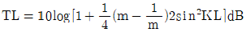
이다. (m:단면적의 비,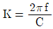
(f는 대상주파수(Hz), π:180℃, C:음속(m/sec), L:팽창부길이(m))]- 0.137m
- 0.249m
- 0.364m
- 0.478m
(정답률: 알수없음)
39. 소음대책 측면에서 공장건물 내부에 소음배출시설 설치시 배려하여야 할 사항이 아닌 것은?
- 부지경계선과의 거리
- 부지선정
- 건물구조
- 개구부 위치
(정답률: 알수없음)
40. 5×5[m]의 잔향실의 잔향시간은 5초이다. 이 실의 바닥에 5m2의 흡음재를 놓고 측정한 잔향시간이 3초일 때 이 자재의 흡음율은?
- 0.48
- 0.56
- 0.62
- 0.73
(정답률: 알수없음)
3과목: 소음진동 공정시험 기준
41. 철도소음측정에 관한 설명 중 알맞지 않은 것은?
- 철도소음한도를 적용하기 위하여 측정하고자 할 경우에는 철도보호지구외의 지역에서 측정 평가한다.
- 샘플주기를 5초 내외로 결정하고 1시간동안 연속 측정한다.
- 소음계의 동특성은 ‘빠름’으로 하여 측정한다.
- 밤시간대는 1회 1시간동안 측정한다.
(정답률: 알수없음)
42. 1/3옥타브 밴드 중심주파수 500Hz의 하한주파수 및 상한주파수는?
- 350Hz, 500Hz
- 4⑤Hz, 510Hz
- 445Hz, 560Hz
- 480Hz, 620Hz
(정답률: 알수없음)
43. 생활소음 측정시 피해가 예상되는 곳의 부지경계선보다 3층 거실에서 소음도가 더 클 경우 측정점은 거실창문 밖의 몇 m 떨어진 지점으로 해야 하는가?
- 0.5~1m
- 1~1.5m
- 1.5~2.5m
- 2.5~3.5m
(정답률: 알수없음)
44. 다음 그림에서 L10진동레벨은 약 몇 dB(V)인가?
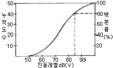
- 약 60dB(V)
- 약 70dB(V)
- 약 80dB(V)
- 약 90dB(V)
(정답률: 알수없음)
45. 도로교통진동 측정을 위해 디지털 진동자동분석계를 사용하는 경우에 자료분석방법으로 적절한 것은?
- 샘플주기를 1초이내에서 결정하고 5분이상 측정하여 구간 최대치로부터 10개를 산술평균한 값을 그 지점의 측정진동레벨로 한다.
- 샘플주기를 0.1초이내에서 결정하고 5분이상 측정하여 구간 최대치로부터 10개를 산술평균한 값을 그 지점의 측정진동레벨로 한다.
- 샘플주기를 1초이내에서 결정하고 5분이상 측정하여 자동 연산 기록한 80%범위의 상단치인 L10값을 그 지점의 측정진동레벨로 한다.
- 샘플주기를 0.1초이내에서 결정하고 5분이상 측정하여 자동 연산 기록한 80%범위의 상단치인 L10값을 그 지점의 측정진동레벨로 한다.
(정답률: 알수없음)
46. 소음계의 지시치의 변화폭이 5dB(A)이내인 경우 구간내 최대치부터 소음도를 크기순으로 몇 개의 산술평균을 측정 소음도로 하는가?
- 30개
- 20개
- 10개
- 5개
(정답률: 알수없음)
47. 다음 중 진동 신호를 전기신호로 바꾸어 주는 장치는?
- 진동픽업
- 출력단자
- 증폭기
- 동특성조절기
(정답률: 알수없음)
48. 최소한의 소음계 구성요소에 포함되는 것은?
- 마이크로폰, 가변감쇠기, 교정장치, 소음도 기록계
- 마이크로폰, 교정장치, 삼각대, 소음도 기록계
- 마이크로폰, 증폭기, 동특성조절기, 교정장치
- 마이크로폰, 청감보정회로, 압전소자, 삼각대
(정답률: 알수없음)
49. 소음 측정점에 관한 설명 중 알맞은 것은?
- 일반지역의 경우 가능한 한 반경 5m 이내에 장애물이 없는 곳을 측정점으로 한다.
- 상시측정용의 경우의 측정높이는 주변환경, 통행, 촉수등을 고려하여 지면 위 1.2~8m 높이로 할 수 있다.
- 측정점 선정시에는 당해지역 소음평가에 현저한 영향을 미칠것으로 예상되는 곳에 설치하여야 한다.
- 도로변지역의 범위는 고속도로의 경우 도로단으로부터 150m 이내의 지역을 말한다.
(정답률: 알수없음)
50. 소음계의 부속장치인 표준음 발생기에 관한 설명으로 틀린 것은?
- 소음계의 측정감도를 교정하는 기기이다.
- 발생음의 주파수가 표시되어야 한다.
- 발생음의 음압도가 표시되어야 한다.
- 발생음의 오차는 ±0.5dB이내이어야 한다.
(정답률: 알수없음)
51. 소음계의 구조별 특성에 관한 설명으로 맞는 것은?
- 마이크로폰은 지향성이 큰 압력형으로 한다.
- 교정장치의 교정가능점위는 50~80dB(A)이다.
- 출력단자는 소음신호를 기록기 등에 전송할 수 있는 직류단자를 갖춘것이어야 한다.
- 디지털형 지시계기는 숫자가 소수점 한자리까지 표시되어야 한다.
(정답률: 알수없음)
52. 공정시험방법상 ‘정상소음’의 정의로 맞는 것은?
- 배경소음외에 측정하고자 하는 특정의 소음을 말한다.
- 시간적으로 변동하지 아니하거나 또는 변동폭이 작은 소음을 말한다.
- 장애물 등 소음에 영향을 미치는 요소없이 발생되는 소음을 말한다.
- 충격소음, 연속소음외에 소음원으로부터 발생되는 소음을 말한다.
(정답률: 알수없음)
53. 항공기 소음의 WECPNL 산출 시 비행횟수 N2는 몇 시부터 몇 시까지의 비행횟수를 나타내는가?
- 07시~19시
- 08시~20시
- 09시~21시
- 10시~22시
(정답률: 알수없음)
54. 다음 중 등가소음도(Leq) 계산식으로 바르게 표현한 것은?
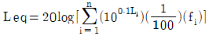
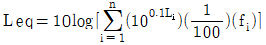
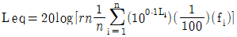
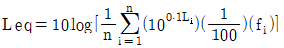
(정답률: 알수없음)
55. 진동레벨계의 성능에 관한 설명으로 틀린 것은?
- 측정가능 주파수는 1-90Hz 이상이어야 한다.
- 측정가능 진동레벨 범위는 45~120dB 이상이어야 한다.
- 진동픽업의 횡감도는 규정주파수에서 수감축 감도에 대한 차이가 10dB이상어여야 한다.
- 레벨렌지 변환기가 있는 기기에 있어서 레벨렌지 변환기의 전환오차는 0.5dB 이내이어야 한다.
(정답률: 알수없음)
56. 측정진동레벨이 배경진동레벨보다 10dB(V) 크게 측정되었다. 이 때의 설명으로 가장 알맞은 것은?
- 배경진동의 측정진동레벨에 크게 영향을 준다.
- 대상진동레벨을 구할 수 없다.
- 배경진동레벨의 보정치는 -1이다.
- 배경진동이 측정진동레벨에 영향을 주지 않는다.
(정답률: 알수없음)
57. 항공기 소음 측정에 대한 설명으로 틀린 것은?
- 전자장(대형 전기기계, 고압선 근처)의 영향을 받는 곳에서는 측정할 수 없다.
- 풍속이 5m/sec를 초과할 때는 측정하여서는 안된다. (상시측정용 옥외마이크로폰은 그러지지 않는다.)
- 소음계의 마이크로폰은 소음원 방향으로 향하도록 하여야 한다.
- 손으로 소음계를 잡고 측정할 경우에는 소음계는 측정자의 몸으로부터 50cm이상 떨어져야 하며, 측정자는 비행경로에 수직하게 위치하여야 한다.
(정답률: 알수없음)
58. 방직공장의 측정소음도가 72dB(A)이고 배경소음이 68dB(A)라면 대상소음도는 몇 dB(A)가 되겠는가?
- 76dB(A)
- 72dB(A)
- 70dB(A)
- 68dB(A)
(정답률: 알수없음)
59. 다음은 레벨렌지변환기에 대한 설명이다. ()안에 알맞은 것은?
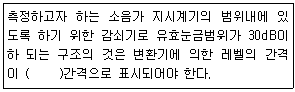
- 1dB
- 5dB
- 10dB
- 15dB
(정답률: 알수없음)
60. 다음 중 측정소음도 및 배경소음도의 측정을 필요로 하는 기준은?
- 환경기준 및 배출허용기준
- 환경기준 및 생활소음규제기준
- 배출허용기준 및 생활소음규제기준
- 배출허용기준 및 항공기소음기준
(정답률: 알수없음)
4과목: 진동방지기술
61. ISO(국제표준화기구)에 의해서 정해진 전신진동폭로의 평가지침에 표시된 허용한계에 있어서, 인체의 영향을 결정하는 물리적 인자의 결합 중 바른 것은?
- 주파수-진동가속도-진동원에서의 거리-진동의 방향
- 주파수-진동가속도-진동의 방향-지속시간(폭로시간)
- 주파수-진동가속도-1일당 폭로회수-변동성
- 주파수-진동가속도-진동원에서의 거리-변동성
(정답률: 알수없음)
62. 금속스프링은 감쇠가 거의 없고, 주파수 진동시 단락되기 쉬우며, 로킹(roking) 현상이 일어나는 단점이 있다. 이를 보완하기 위한 설명 중 틀린 것은?
- 스프링 정적 수축량이 일정한 것을 쓴다.
- 기계무게의 1~2배의 가대를 부착시킨다.
- 스프링의 감쇠비가 클 경우에는 스프링과 방열로 damper를 넣고 사용한다.
- 계의 중심을 낮게 하고 부하(하중)가 평형분포가 되도록 한다.
(정답률: 알수없음)
63. 반진재료에는 공기스프링류, 금속스프링류, 금속스프링류, 방진고무류등을 주로 많이 사용하고 있다. 공기스프링은 다음 중 고유진동수가 몇 Hz이하를 요구할 때 주로 사용하는가?
- 10Hz이하
- 200Hz이하
- 500Hz이하
- 1000Hz이하
(정답률: 알수없음)
64. 그림과 같이 스프링 K1, K2, K3를 직렬로 연결했을 때 등가스프링 계수 Ke는?
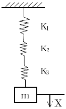
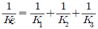
- Ke=K1+K2+K3
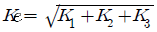
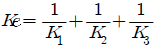
(정답률: 알수없음)
65. 두 개의 조화운동 y1=sin10t, y2=sin11t를 합성할 때 어떤 현상이 나타나는가?
- 공진(Resonsince)
- 맥놀이(Beat)
- 과도현상(Transient)
- 감쇠(Danping)
(정답률: 알수없음)
66. 다음 중 제진합금의 분류형태에 속하지 않는 것은?
- 복합형
- 단전형
- 강자성형
- 전위형
(정답률: 알수없음)
67. 그림과 같은 진동계가 진동을 할 때 주기를 나타내는 식은 다음 중 어느 것인가?
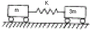
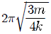
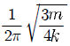
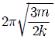
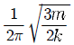
(정답률: 알수없음)
68. 스프링상수 k가 100kg/cm인 스프링으로 100kg의 무게를 지지하였다고 하면 고유 진동수는 몇 Hz인가?
- 1
- 3
- 5
- 7
(정답률: 알수없음)
69. 진동절연(vibration isoltion)을 가장 올바르게 설명한 것은?
- 진동원을 없앤다.
- 지동을 차단한다.
- 공진을 피한다.
- 흡진기로 진동을 감소시킨다.
(정답률: 알수없음)
70. 무게 10kg인 물체가 스프링상수 20kg/cm인 스프링에 매달려 있다. 이 계의 자유진동의 주기 τ는 얼마인가?
- 0.14sec
- 0.29sec
- 0.45sec
- 0.59sec
(정답률: 알수없음)
71. X1=8cos, 60t, X2=6cos 60t인 2개의 진동이 동시에 일어날 때 이 합성진동의 최대 진폭은? (단, 진폭의 단위는 [cm]로 한다.)
- 6cm
- 8cm
- 10cm
- 14cm
(정답률: 알수없음)
72. 다음 중 가진력 저감의 예로 가장 거리가 먼 것은?
- 단조기를 단압프레스로 교체한다.
- 터보용 고속회전압축기에 연편을 부착하여 가진력을 감소시킨다.
- 기계에서 발생하는 가진력은 지향성이 있으므로 기계의 설치방향을 변경한다.
- 크랭크 기구를 가진 왕복운동 기계는 복수개의 실린더를 가진 것으로 교체한다.
(정답률: 알수없음)
73. 다음 조건이 설명하는 탄성지지 재료로 알맞은 것은? (유효주파수 범위:5~200Hz, 정적변위의 제한:최대두께의 10%까지, 감쇠비:0.⑤, 간결성, 내열성:우수)
- 코르크
- 방진고무
- 금속스프링
- 공기스프링
(정답률: 알수없음)
74. 다음 그림 중 진동의 백색잡음 과정에 해당하는 것은? (단, 여기서 Sxx:파워스펙트럼 밀도함수, f:주파수)
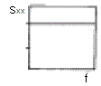
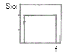
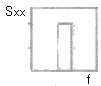
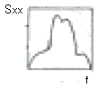
(정답률: 알수없음)
75. 다음 중 자려진동의 예로 적절한 것은?
- 바이올린 현의 진동
- 회전하는 평평축의 진동
- 왕복운동 기계의 크랭크축계의 진동
- 단조기나 프레스에서 발생되는 진동
(정답률: 알수없음)
76. 정현파 진동에서 진동가속도의 실효치와 최대치사이의 관계식으로 맞는 것은?
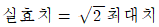
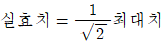
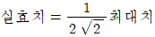
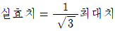
(정답률: 알수없음)
77. 지반진동 차단 구조물이 수진 구조물쪽으로 전달되는 진동파 에너지를 감소시키는데 이용하는 현상으로 거리가 먼 것은?
- 진동파의 간섭
- 진동파의 산란
- 진동파의 발산
- 진동파의 반사
(정답률: 알수없음)
78. 어떤 기계를 방진고무 위에 설치할 때 정적처짐량이 2mm였다. 이 기계에서 발생하는 기진력의 각진동수가 ω=210rad/sec일 떄, 진동전달율은 얼마가 되는가? (단, 감쇠의 영향을 무시한다.)
- 0.⑤
- 0.0785
- 0.1
- 0.125
(정답률: 알수없음)
79. 진동발생원의 수직방향에 대한 주파수 분석결과 진동가속도 실효치가 2Hz:3mm/s2, 4Hz:4mm/s2, 8Hz:5mm/s2, 16Hz:6mm/s2라면, 합성파의 진동가속도 실효치는?
- 9.3mm/s2
- 12.8mm/s2
- 15.6mm/s2
- 18.2mm/s2
(정답률: 알수없음)
80. 운동방정식이
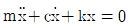
인 감쇠 진동계에서 감쇠비 ζ를 나타내는 식이 아닌 것은?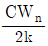
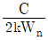
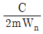
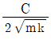
(정답률: 알수없음)
5과목: 소음진동 관계 법규
81. 측정망 설치계획에 포함되어야 할 사항이 아닌 것은?
- 측정망의 배치도
- 측정소를 설치할 토지 또는 건축물의 위치 및 면적
- 측정망 규모 및 측정범위
- 측정망 설치시기
(정답률: 알수없음)
82. 운행차 정기검사 대상항목 중 경음기 검사시 경음기를 눈으로 확인하거나 몇 초 이상 작동시켜 경음기의 추가 부착여부를 귀로 확인하여야 하는가?
- 1초
- 3초
- 5초
- 7초
(정답률: 알수없음)
83. 다음 중 확인검사대행자의 등록을 할 수 있는 자는?
- 금치산자
- 파산선고를 받고 복권되지 아니한 자
- 임원중 한정치산자에 해당하는 자가 있는 법인
- 확인검사대행자의 등록이 취소된 후 2년이 경과된 자
(정답률: 알수없음)
84. 국가환경종합계획에 포함되어야 할 내용으로 틀린 것은?
- 인구 산업 경제 토지 및 해양의 이용 등 환경변화 여건에 관한 사항
- 환경오염원, 환경오염도 및 오염물질 배출량의 예측과 환경오염 환경훼손으로 인한 환경질의 변화전망
- 사업시행에 소요되는 비용의 산정 및 재원 조달방법
- 환경오염 배출업소 지도 단속 계획
(정답률: 알수없음)
85. 다음 중 공장 진동 배출허용기준은?
- 평가진동레벨 65dB(V)
- 평가진동레벨 60dB(V)
- 평가진동레벨 55dB(V)
- 평가진동레벨 50dB(V)
(정답률: 알수없음)
86. 다음 중 환경관리인의 교육기관으로 알맞은 것은?
- 국립환경연구원
- 환경보전협회
- 환경공무원교육원
- 환경관리인협회
(정답률: 알수없음)
87. 다음 중 공장 소음 진동의 배출시설 설치에 관한 내용으로 틀린 것은?
- 배출시설을 설치하고자 하는 자는 대통령령이 정하는 바에 의하여 시장, 군수, 구청장에게 신고하여야 한다.
- 학교 또는 종합병원의 주변 등 환경부령이 정하는 지역에 있어서는 시장, 군수, 구청장의 허가를 받아야 한다.
- 배출시설을 신고 또는 허가 받은 자가 그 사항을 변경하고자 할 때에는 시장, 군수, 구청장에게 변경신고를 하여야 한다.
- 산업단지 기타 대통령령이 정하는 지역에 위치한 공장에 배출시설을 설치하고자 하는 자의 경우에는 신고 또는 허가대상에서 제외한다.
(정답률: 알수없음)
88. 다음 중 소음배출시설과 가장 거리가 먼 것은?
- 10마력 이상의 탈사기
- 10마력 이상의 송풍기
- 10마력 이상의 기계체
- 10마력 이상의 변속기
(정답률: 알수없음)
89. 다음 중 자동차 소음인증을 면제할 수 있는 자동차는?
- 외국에서 국내의 공강기관 또는 비영리단체에 무상으로 기증하여 반입하는 자동차
- 여행자 등이 다시 반출할 것을 조건으로 일시 반입하는 자동차
- 외교관, 주한 외국군인 또는 그 가족이 사용하기 위하여 반입하는 자동차
- 국가대표선수용 및 훈련용으로 사용하기 위하여 반입하는 자동차로서 문화관광부장관의 확인을 받은 자동차
(정답률: 알수없음)
90. 다음은 환경기술인과 관련된 사항이다. 옳지 않은 것은?
- 환경기술인은 배출시설 및 방지시설이 정상가동되어 소음진동의 정도가 배출허용기준에 적합하도록 관리하여야 한다.
- 사업자는 환경기술인이 그 관리사항을 철저히 이행하도록 하는 등 환경기술인의 관리사항을 감독하여야 한다.
- 사업자는 배출시설과 방지시설의 정삭적인 운영, 관리를 위한 환경기술인의 업무를 방해하여서는 안된다.
- 사업자는 환경기술인으로부터 업무수행상 필요한 요청을 받은 때에는 조업상태에 따라 응할 수 있다.
(정답률: 알수없음)
91. 환경부령이 정하는 특정공사의 기준으로 틀린 것은? (단, 특정공사 사전신고대상 기계, 장비를 2일이상 사용하는 공사기준)
- 연면적이 1천제곱미터 이상인 건축물의 건축공사
- 연면적이 3천제곱미터 이상인 건축물의 해체공사
- 면적합계가 1천곱미터 이상인 토공사, 정지공사
- 면적합계가 3천곱미터 이상인 토목건설공사
(정답률: 알수없음)
92. 제작차의 소음배출특성을 참작하기 위한 소음 종류와 가장 거리가 먼 것은?
- 경적소음
- 가속주행소음
- 주행소음
- 배기소음
(정답률: 알수없음)
93. 이동소음규제지역을 지정하여 이동소음원의 사용을 금지하거나 사용시간등을 제한할 수 있는 조치를 명할 수 있는 자는?
- 환경부장관
- 국무총리
- 시장,군수, 구청장
- 건설교통부장관
(정답률: 알수없음)
94. 다음 중 소음진동규제법상의 자동차의 설명으로 맞지 않는 것은? (단 2000년 1월 1일부터 제작되는 자동차기준)
- 승용자동차는 지프(jeep), 웨곤(wagon) 및 승합차를 포함한다.
- 화물자동차에 해당되는 건설기계의 종류는 환경부장관이 정하여 고시한다.
- 공차중량이 0.5톤 이상인 이륜자동차는 경자동차로 분류한다.
- 전기를 주동력으로 사용하는 자동차의 공차중량이 1.5톤 미만에 해당하는 경우 경자동차로 구분한다.
(정답률: 알수없음)
95. 소음진동규제법상 환경관리인 자격기준 중 소음진동기사 2급을 대체할 수 없는 자는? (단, 2급은 산업기사와 같음)
- 기계분야기사 2급이상의 자격소지자로 환경분야에서 2년 이상 종사한 자
- 전기분야기사 2급이상의 자격소지자로 환경분야에서 2년 이상 종사한 자
- 금속분야기사 2급이상의 자격소지자로 환경분야에서 2년 이상 종사한 자
- 대기환경기사 2급이상의 자격소지자로 환경분야에서 2년 이상 종사한 자
(정답률: 알수없음)
96. 환경에 관한 국민의 권리와 의무 중 거리가 먼 것은?
- 모든 국민은 건강하고 쾌적한 환경에서 생활할 권리를 가진다.
- 모든 국민은 국가 및 지방자치단체의 환경보전시책에 협혁을 하여야 한다.
- 모든 국민은 일상생활에 따르는 환경오염과 환경훼손을 줄이고, 국토 및 자연환경의 보전을 위하여 노력하여야 한다.
- 모든 국민은 환경오염 및 환경훼손과 그 위해를 예방하고 환경을 적정하게 관리 보전하여야 한다.
(정답률: 알수없음)
97. 조업중인 공장에서 소음진동배출허용기준을 초과하여 개선명형을 받고도 부득이한 사유로 인하여 기간내에 조치를 완료하지 못한 경우 연장할 수 있는 기간은?
- 6월
- 9월
- 1년
- 2년
(정답률: 알수없음)
98. 공항주변 인근지역에서의 항공기 소음영향도(WECPNL)는 얼마인가?
- 70
- 80
- 90
- 100
(정답률: 알수없음)
99. 배출시설의 설치신고를 하지 아니하고 배출시설을 설치하거나 그 배출시설을 이용하여 조업한 자에 대한 벌칙으로 맞는 것은?
- 6월 이하의 징역 또는 200만원 이하의 벌금
- 1년 이하의 징역 또는 300만원 이하의 벌금
- 2년 이하의 징역 또는 500만원 이하의 벌금
- 3년 이하의 징역 또는 1000만원 이하의 벌금
(정답률: 알수없음)
100. 배출시설의 변경신고대상으로 틀린 것은?
- 사업장의 명칭을 변경하는 경우
- 사업주의 이름 또는 법인의 명칭을 변경하는 경우
- 배출시설을 폐쇄하는 경우
- 배출시설의 규모를 100분의 30이상(신고 또는 변경신고를 하거나 허가받은 규모를 증설하는 누계를 말한다.) 증설하는 경우
(정답률: 알수없음)
따라서 정답은 "일반적으로 수직 및 수평 보정된 레벨을 많이 사용하여 dB(V)단위로 표기한다."이다.
이유는 진동의 크기를 표현할 때는 진폭(amplitude)이 사용되는데, 이를 전압(voltage)으로 변환하여 dB(V)로 표기하기 때문이다. 이때 수직 및 수평 보정된 레벨을 사용하는 이유는 인간의 청각 감도가 주파수에 따라 다르기 때문이다. 따라서 진동의 크기를 정확하게 표현하기 위해서는 등감각곡선에 따라 보정을 해주어야 한다.